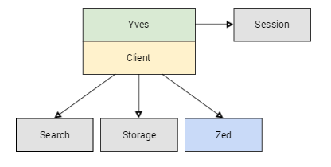
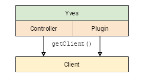

Client
Yves is divided into two:
- The part with controllers, forms, templates etc
- Client part which provides access to the search and storage engine and the Zed application.
The purpose of the client is to encapsulate the logic which runs the shop independent from the overlying application. So in case you want to use a different technology stack, you can reuse the client.

How to use a Client in Yves
getClient() method in Yves
Spryker provides several clients. For instance there is a cart client which contains methods like addItem() or removeItem(). And there is a catalog client which handles query strings. In each module you can access the related client with the getClient() method which is available in controllers and plugins.

The following example shows the usage of the cart client inside the CartController. As you can see the client uses transfer objects as an input parameter.
<?php
namespace Pyz\Yves\Cart\Controller;
use Generated\Shared\Transfer\ItemTransfer;
use Pyz\Yves\Cart\Plugin\Provider\CartControllerProvider;
use Spryker\Yves\Kernel\Controller\AbstractController;
use Spryker\Client\Cart\CartClientInterface;
use Symfony\Component\HttpFoundation\RedirectResponse;
/**
* @method CartClientInterface getClient()
*/
class CartController extends AbstractController
{
/**
* @param string $sku
* @param int $quantity
* @param array $optionValueUsageIds
*
* @return RedirectResponse
*/
public function addAction($sku, $quantity, $optionValueUsageIds = [])
{
// Get the client
$cartClient = $this->getClient();
// Build a transfer object
$itemTransfer = new ItemTransfer();
$itemTransfer->setId($sku);
$itemTransfer->setQuantity($quantity);
// Add the item:
// Behind this there is a request to Zed.
// The response is stored in the session.
$cartClient->addItem($itemTransfer);
return $this->redirectResponseInternal(CartControllerProvider::ROUTE_CART);
}
}
Client Execution Time
You can do as many usages of the storage and search engine, but you should be aware that each call takes some time. There is a restriction for calls to Zed. Each Call to zed takes some time to start the application and perform the action. As a result the execution time of yves becomes slower.
| Client | Avg execution time |
|---|---|
|
Zed |
50 to 500 ms per request |
|
Elasticsearch |
1 to 10 ms per search query |
|
Redis |
0.1 to 1 ms per get() |
The real execution time in your project depends on the enviroment, the performance of implementation and the amount of stored data.
How to Implement a Client
All clients have the same structure. There is always one class which represents the client. This is quite close to the facades which we use in Zed. This class is the entry point and it usually delegates to concrete implementations which are placed in the optional subdirectories Search, Session, Storage, and Zed.
| Class | Purpose |
|---|---|
|
Pyz\Client\MyBundle\MyBundleClient |
The client’s entry point |
|
Pyz\Client\MyBundle\MyBundleDependencyProvider |
A dependency provider to interact with other bundles |
|
Pyz\Client\MyBundle\MyBundleFactory |
The client’s factory |
|
Pyz\Client\MyBundle\Session\MyBundleSession |
A wrapper for the session |
|
Pyz\Client\MyBundle\Search\MyBundleSearch |
Contains search queries (e.g. Elasticsearch ) |
|
Pyz\Client\MyBundle\Storage\MyBundleStorage |
Gets data from the storage (e.g. Redis) |
|
Pyz\Client\MyBundle\Zed\MyBundleStub |
The stub connects to Zed’s corresponding gateway controller |
When you implement a client you should have in mind, that the client does not know about Yves. So you should not use any class from Yves there otherwise you make the client non-reusable in a different context.
The client class uses the factory to create the other objects. These objects require a connecting client which they get injected in the factory. For this purpose the factory contains these prepared methods:
- createSessionClient()
- createZedRequestClient()
- createStorageClient()
- createSearchClient()
Requests from Yves to Zed
The request from Yves to Zed involves two important classes:
- The stub represents the remote methods in the client.
- The gateway controller represents the entry point on Zed side.